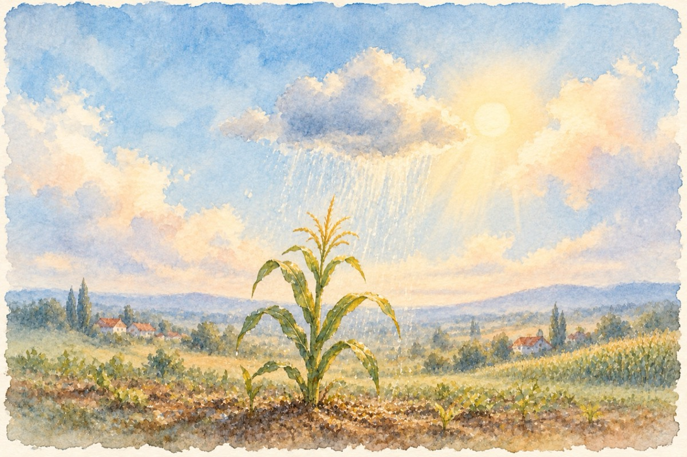

Natura
Întreabă pământul de-i este foame
Întreabă fântâna de-i este sete
Întreabă-l frumos și pe soare
De-i place această tristă poveste!
Întreabă și grâul de vrea pâine
Întreabă porumbul de vrea ploaie.
Și luna de vrea a ne spune
De unde-a primit frumoasa-i față bălaie?
Și norii întreabă-i dacă mai sunt,
Întreabă-te pe tine de ce acestea toate?
E-o luptă mereu între cer și pământ
Există ceva ce nu știm peste poate?
Și eu mă întreb ca și tine, natură
De fapt ne punem aceeași întrebare
Suntem legați într-o mare împletitură,
Cu toții luminați de același soare!
Haide să stăm la taifas împreună,
Să socotim și să recunoaștem, cu bune, cu rele,
De ce-i vreme rea, de ce-i vreme bună!
De ce forțele toate se luptă-ntre ele?
Eu cred că noi oamenii purtăm o mare vină
În goana noastră nebună și fără măsură
Avem rațiune și-n creier lumină
De ce-o dezechilibrăm cu știință pe mama natură?
Vasile Groza